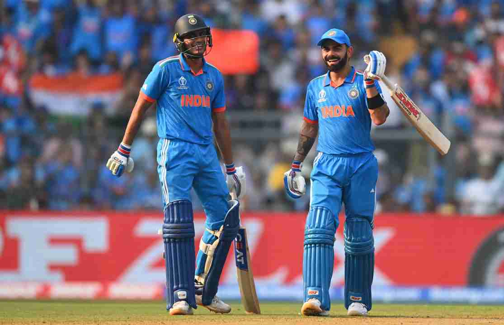

India vs Sri Lanka
Pacers wreck Sri Lanka to send India into the semifinal
India's pace trio of Jasprit Bumrah, Mohammed Siraj and Mohammed Shami came up with a sensational performance with the new ball to wreck Sri Lanka.
SL managed to get just a few more to roll over for 55 and crash to an embarrassing 302-run loss.
Venue: Wankhede Stadium, Mumbai

- Sri Lanka won the toss and opt to Bowl.
- Madhushanka one of the top bowler of this WC edition gets the dangerous in form Captain Rohit in the very first over of the match.
- Gill (92) and Kohli (88) had played the wonderful innings.
- Shreyas Iyer (82) had played mamooth innings where he set the stage on fire.
- Iyer, Gill and Kohli fire as India set Sri Lanka daunting target.
- Sri Lankan Madushanka clinched a five-fer.
- Shami (5 wkts) and Siraj (3 wkts) trashed SL innings to 55.
Scores:
IND - 357/8 (50 overs)
SL - 55 (19.4 overs)
Player of the Match : Mohammed Shami
Copyright @ ICC Cricket World Cup 2023 Blog